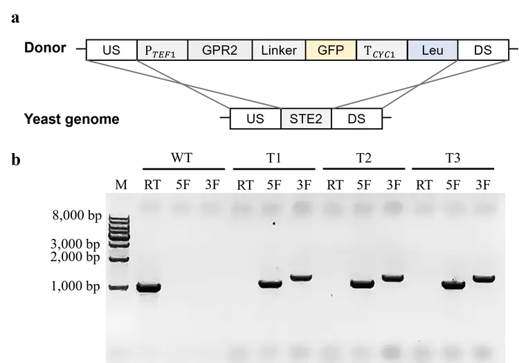
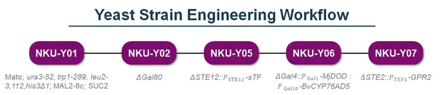
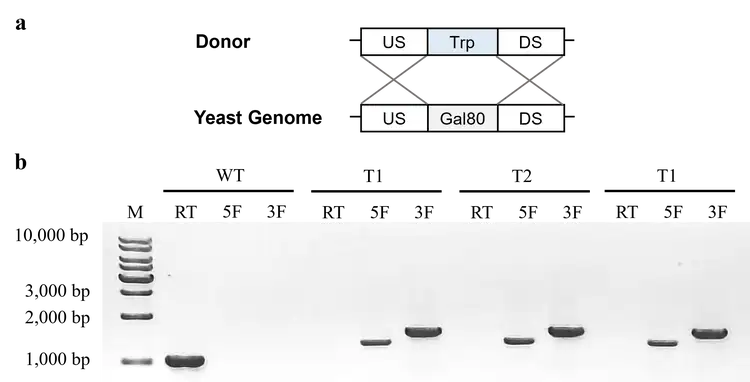
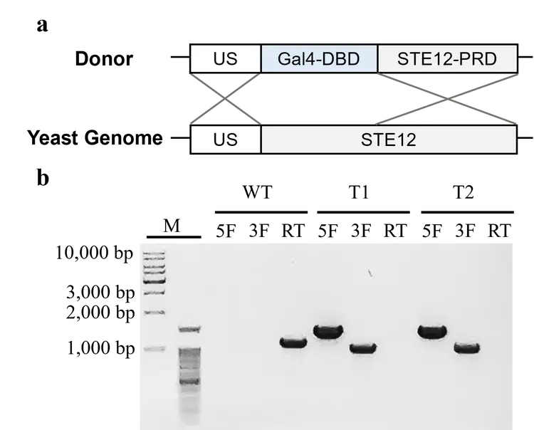

DBTL-1 | Engineering the Signal Response Pathway
Receptor Screening and Target Selection
Design | Defining the Receptor Screening Objective
To build a yeast sensor that distinguishes ascr#18 from ascr#3, we needed recognition elements suitable for further engineering. Published studies identify Gpr2, Gpr3, and GprC from nematode-trapping fungi as G protein-coupled receptors (GPCRs) involved in ascaroside sensing. We selected all three as candidates, examining their ligand-recognition characteristics while considering the requirements for localization and signaling integration in yeast.
Build | Establishing Receptor Comparisons and Literature References
We prepared predicted structures of the three receptors and the ascaroside ligands. Drawing on the AutoDock Vina method used in the GprC study and the SwissDock method used in the Gpr2 and Gpr3 study, we conducted docking explorations with the respective methods. We also compiled reported pocket locations and key residues as references for comparison.
Test | Comparing with the Literature and Refining the Docking Workflow
We examined scores, ligand positions, and residue contacts to assess whether docking poses agreed with the available literature evidence. The analysis revealed that inconsistent coordinate references could misplace search regions and that loss of formal charges during format conversion could affect the identification of charged contacts. We therefore added structural alignment, search-region review, and chemical-information checks, progressively refining the docking and contact-analysis workflow.
Learn | Selecting Receptors for Further Engineering
Receptor selection requires consideration of both computational results and the conditions for heterologous use. GprC has been reported to show plasma membrane- and mitochondria-associated localization. Because this could increase the complexity of localization and pathway integration in yeast, we did not include GprC in this round of engineering, while retaining it as a structural reference. Subsequent mutant screening focused on Gpr2, with studies of Gpr3 and its mutants continuing alongside it.
The Third Cycle——Wet Lab
Informed by results from the prior cycle, this iteration characterizes heterologous expression and proper plasma membrane localization of GPR2, establishing proof of feasibility for downstream chassis engineering.
Design
To validate heterologous expression and proper plasma membrane localization of GPR2 in our host strain S. cerevisiae CEN.PK2-1C, we adopted the following experimental pipeline: assembly of the GPR2-sfGFP expression plasmid, gene knock-in mediated by yeast homologous recombination (HR), and fluorescence microscopy to characterize protein expression and subcellular localization. See Wet Lab-Results- DBTL-1 for detailed design and experimental protocols.
Build
Via homologous recombination (HR), we integrated the constitutive GPR2-sfGFP expression cassette into the CEN.PK2-1C genome (Figure 1).

Test
Data status
The wet-lab team has reported that the culture medium in part of the fluorescence experiments was prepared incorrectly, and those experiments are being repeated. Until the team confirms which fluorescence results are affected, the GPR2-sfGFP localization results in this section (fluorescence microscopy, CFW and FM4-64 staining) and the conclusion drawn from them are provisional.
Following gene knock-in, we visualized three groups of yeast under fluorescence microscopy: unstained cells (Figure 2), cell wall-stained yeast (Figure 3), and plasma membrane-stained yeast (Figure 4).
Distinct GFP fluorescence signals were detected at the cell periphery in unstained yeast.

For CFW-labelled yeast, the green GFP signal localizes to the cytoplasmic side of the blue CFW fluorescence.

In FM4-64-labelled yeast, the green GFP fluorescence and red FM4-64 signal co-localize on the vacuolar membrane following endocytosis.

Learn
Collectively, these data confirm heterologous expression and proper plasma membrane localization of GPR2 in CEN.PK2-1C, laying an essential foundation for our chassis engineering. We therefore advance to the next cycle to assemble the full signal-responsive engineered strain.
The Fourth Cycle——Wet Lab
Building upon findings from prior iterations, this cycle launches the chassis engineering of our signal-responsive pathway.
Design
Referring to previous work reported by Fan et al. [1][2], we assembled the ascaroside-sensitive yeast biosensor according to the pipeline illustrated in Figure 1.

Build
First, we knocked out the Gal80 gene in CEN.PK2-1C to obtain the engineered strain NKU-Y02 (Figure 2), which eliminates endogenous signal interference in this pathway.


Subsequently, we fused the PRD domain of Ste12 (216–688 aa) with the DBD domain of Gal4 (1–147 aa) to construct a synthetic transcription factor (sTF). This construct was transformed into NKU-Y05, yielding strain NKU-Y05 (Figure 3) and enabling the coupling of GPCR-activated signaling with the GAL pathway.
Subsequently, we introduced MjDOD and BvCYP76AD5 driven by the bidirectional Gal1/10 promoter into NKU-Y05 to generate the engineered strain NKU-Y06 (Figure 4), realizing the visualization of signal output.
Finally, we transformed the constitutive GPR2 expression cassette into NKU-Y06 to obtain the engineered strain NKU-Y07 (Figure 5), completing the preliminary construction of the full engineered strain system and advancing the project to the testing phase.
References
Fan C, Yuan J. Reshaping the yeast galactose regulon via GPCR signaling cascade. Cell Rep Methods. 2023 Dec 18;3(12):100647. doi: 10.1016/j.crmeth.2023.100647. Epub 2023 Nov 20. PMID: 37989311; PMCID: PMC10753199.
Cong Fan, Nike He, Jifeng Yuan, Cascaded amplifying circuit enables sensitive detection of fungal pathogens, Biosensors and Bioelectronics, Volume 250, 2024, 116058, ISSN 0956-5663, https://doi.org/10.1016/j.bios.2024.116058.
DBTL-2 | Engineering Receptor Specificity and Developing Pathway Models
Mutation Design and Screening Guided by Contact Differences
Design | Identifying Engineering Sites from WT Contact Differences
To investigate the differential recognition of ascr#18 and ascr#3 by Gpr2, we compared the WT receptor’s contact distributions with both ligands. Residues showing contact differences were selected as candidate sites, and alanine substitutions were used to examine how each position affected the two-ligand profile.
Build | Generating Mutant Models and Consistent Controls
We generated mutant sequences according to the substitution designs and predicted their structures using AlphaFold 3. WT and mutant structures underwent consistent preparation and docking procedures. Original residue numbering was retained, structures were aligned to a common coordinate reference, and identical ligand inputs and search settings were used to support corresponding comparisons of scores and contacts.
Test | Iterating Substitutions Using Score and Contact Feedback
We selected candidates from single-site alanine scanning, used score changes and contact analysis to guide additional side-chain substitutions, and performed saturation scanning at selected sites. Candidates were grouped as favoring ascr#3 or ascr#18 according to the difference between the two ligands’ score changes relative to WT. We then examined both scores separately to determine whether the shift resulted from a lower score for the target ligand, a higher score for the other ligand, or both. Contact comparisons with WT helped identify the associated changes in ligand position and interactions.
After obtaining single-mutant candidates, we explored combined mutations. Parents were selected according to the direction of the shift and the pattern of score changes to test whether the effects of different substitutions could be retained together. Each combination was compared with WT and both single-mutant parents. Most tested combinations did not further improve the better parent’s target-ligand score or increase the difference between the two ligands, so subsequent work continued to focus on single-mutant candidates.
Learn | Selecting Candidates for Dynamic Testing
Score differentiation and contact analysis led us to select N84V and V368R. Relative to WT from the same batch, N84V had a lower ascr#18 score and a higher ascr#3 score, while V368R showed the opposite pattern. These results defined the next questions: would the selected ligand poses persist in full-length receptors within a membrane environment, and would the predicted contacts remain or rearrange? Both mutants and WT therefore proceeded to MD comparisons.
Investigating Candidate Dynamics in a Membrane Environment
Design | Examining Docking Candidates in the Membrane
In docking, the score changes for N84V favored ascr#18, while those for V368R favored ascr#3. We wanted to understand whether the ligands would remain in the predicted pockets and retain their original contacts in a membrane environment. We therefore performed molecular dynamics (MD) simulations of six complexes: WT, N84V, and V368R, each paired with one of the two ligands.
Build | Preparing Full-Length Receptors and Membrane Systems
We placed each docking pose into its corresponding full-length receptor, checked for spatial clashes between the ligand and restored segments, and adjusted local lid regions where overlaps occurred. During rebuilding, we found that some approaches also changed the backbone outside the loop or the initial ligand pose. We therefore restricted adjustments to the lid region while retaining the remaining coordinates of each system. After these checks, each of the six complexes was placed in a POPC lipid bilayer with solvent and ions.
Test | Tracking Ligand Motion and Contact Changes
Each of the six systems completed one 100 ns simulation. We tracked the ligand relative to the local pocket to distinguish global receptor motion from ligand movement within the pocket.
During the second half of the trajectory, N84V–ascr#18 showed less displacement than WT–ascr#18 and N84V–ascr#3. Contact analysis showed persistent contact between Arg189 and the carboxylate end of ascr#18, providing a possible explanation for the ligand’s retention in that region.
In V368R–ascr#3, the ligand moved away from its initial position toward Arg345 and formed contacts also observed in WT–ascr#3. To understand this change, we examined internal receptor contacts around the mutation site. The charged end of Arg368 moved away from Asp70 at approximately the same time that the ligand began contacting Arg345. In V368R–ascr#18, by contrast, Arg368 and Asp70 remained close throughout the trajectory.
Learn | Reinterpreting Mutation Effects from the Trajectories
The MD results prompted us to revisit the contact-based interpretation of docking. A ligand may maintain its position through persistent contacts, or it may leave its initial pose and establish contacts elsewhere. Assessing mutation effects therefore requires examining both ligand motion and internal receptor changes. Each system currently has only one trajectory, so the sequence of contact changes requires testing through replicate simulations, while actual recognition capability requires experimental confirmation.
ODE: Connecting Receptor Signaling to Colorimetric Output
Design | Building a Minimal Model from Biological Principles
Using the biological principles of receptor activation, signal transduction, and color development, we established a minimal, lumped model. Ligand L served as the input to six functional nodes: receptor R, G protein, MAPK, sTF, GAL production rate, and color. The model used three dynamic equations and three algebraic relationships. Analysis showed that several internal parameters lacked project-specific measurements and could not be determined separately from the final color output alone. We therefore investigated reusable models from the literature and previous iGEM teams.
Build | Adapting the Shared Pathway and Colorimetric Output
Using the publicly available reaction structures of Supady Model B and TU Delft 2012, we incorporated G protein, scaffold, Fus3, and feedback modules. Under fixed construct conditions, we combined sTF regulation, GAL production rate, and color generation. Conservation of total molecular amounts was then used to eliminate redundant states in the shared pathway, yielding six independent dynamic equations.
Test | Checking Computational Consistency and Response Range
We ran the models before and after simplification with identical inputs and parameters, confirming that combining the output relationships and eliminating redundant states preserved the calculated results. We then found that, under the current example parameters, ligand inputs of different strengths eventually produced similar color signals, making it difficult to distinguish high from low inputs. We therefore continued adjusting input and color-development parameters to identify a response range that reflected differences in input.
Learn | Prioritizing Project-Specific Inputs and Outputs
We retained the source parameters of the shared pathway and focused on adjusting the effective input scale and color-production gain, using simulated endpoint fitting to explore distinguishable output ranges. Actual readout times and response ranges still require dose-response and time-course measurements. This work also established the next direction for configuring the two sensors.
Two-Channel Model: Estimating Target Density from Paired Color Readouts
Design | Estimating Mi Density with an Unknown Background Population
The southern root-knot nematode, Meloidogyne incognita (Mi), and the free-living nematode Caenorhabditis elegans (C. elegans) may contribute overlapping ascaroside signals. We therefore retained both sensor readouts from the same sample. Our objective was to estimate Mi density from two color readouts in a complex soil setting where free-living C. elegans and plant-parasitic Mi coexist.
Build | Constructing Mixed Samples and a Density Regression Model
We used Mi densities of 0, 40, and 120 J2/100 cm³, corresponding to the low-, medium-, and high-risk categories in the current Eco example. These were crossed with three independently varying background levels to produce nine simulated combinations. After defining assumptions about ligand release and the mapping to colorimetric output, we fitted the two ODE models separately and used their blank-corrected color outputs to build a density regression model with three coefficients.
Test | Comparing One and Two Channels with New Mixed Samples
After fitting, we defined twelve additional combinations of target and background abundance. Colors were generated through the ODE models, and we compared how well one or two channels recovered the predefined Mi densities. The two-channel model produced smaller errors in these simulated combinations, but some low-density samples yielded negative estimates, indicating that bias remained when the target signal was weak. Changing the assumed ratio of the two ligands released by Mi while keeping model parameters fixed also changed the prediction error, showing that the estimates depended on assumptions about ligand composition.
Learn | Examining Errors at Low Densities and Near Risk Thresholds
Near the Eco risk thresholds, even a small density-prediction error can assign a sample to an adjacent risk category. Subsequent experiments should therefore assess overall prediction error, increase sampling near the thresholds, and separately examine background-only samples and samples with low target densities. Experimental calibration will vary target and background abundance independently, with separate batches used to evaluate whether two channels improve density estimation.
The model derivation is complete, while calibration with project wet-lab data is still underway. In the next iteration, we will calibrate parameters using actual construct information and measurements and assess whether additional mechanisms, such as response delays, are needed.
DBTL-3 | Feedback from Practical and Societal Needs
Economic Benefit Modeling and Refinement of Detection Requirements
Design | Defining the Decision-Making Value of Detection Information
We wanted to determine whether nematode detection results could help growers choose appropriate management measures. We therefore compared testing costs with potentially avoidable losses and examined how detection information affected treatment choices and expected returns.
Build | Establishing Cost Calculations and Management Scenarios
We developed a general cost calculation framework that converts yield losses associated with nematode density into economic losses per unit area and compares costs and net returns across management scenarios. Preliminary analysis indicated that a simple negative or positive result could not adequately reflect differences in risk across densities. We therefore introduced low, medium, and high risk levels, corresponding to no targeted control, moderate-intensity treatment, and high-intensity treatment, respectively, to compare risk-based management with uniform treatment.
Test | Comparing the Added Benefit of Density Information
Using greenhouse tomatoes in Spain as an example, we compared treatment levels selected according to density with a uniform moderate-intensity treatment strategy. Under the example assumptions, density information helped adjust treatment intensity and provided additional expected net returns.
This comparison clarified the control needed to assess the value of detection. Improvements relative to no control include the effect of treatment itself, while comparison with uniform treatment more directly examines whether detection information helps users make better management choices.
Learn | Feeding Management Needs Back into Detection Design
The analysis refined our detection objectives: provide semiquantitative or quantitative information that supports risk classification, cover the key density ranges where management strategies change, and communicate sampling and measurement uncertainty when results fall close to classification thresholds.
Model outputs also expanded from a single return-on-investment metric to include measured density, expected yield loss, risk level, the treatment strategy in each scenario, testing costs, and comparisons of net returns. These outputs inform discussions of the product’s quantitative capability, sampling strategy, and application settings. We will update the model using detection performance and sampling error from wet-lab experiments, together with local prices, testing costs, and willingness to pay from HP research, to test whether these design requirements hold under practical conditions.
References
Docking and Receptor Recognition
B01. Manosalva P, Manohar M, von Reuss SH, et al. Conserved nematode signalling molecules elicit plant defenses and pathogen resistance. Nature Communications. 2015;6:7795. DOI: 10.1038/ncomms8795.
B02. Kuo C-Y, Tay RJ, Lin H-C, et al. The nematode-trapping fungus Arthrobotrys oligospora detects prey pheromones via G protein-coupled receptors. Nature Microbiology. 2024;9:1738–1751. DOI: 10.1038/s41564-024-01679-w.
B03. Hu X, Hoffmann DS, Wang M, et al. GprC of the nematode-trapping fungus Arthrobotrys flagrans activates mitochondria and reprograms fungal cells for nematode hunting. Nature Microbiology. 2024;9:1752–1763. DOI: 10.1038/s41564-024-01731-9.
B04. AutoDock Vina developers. AutoDock Vina Documentation: Frequently Asked Questions. Accessed October 7, 2026. Relevant entries: “How accurate is AutoDock Vina?”; “How big should the search space be?”; “Why do I not get the correct bound conformation?”
B05. Bouysset C, Fiorucci S. ProLIF: a library to encode molecular interactions as fingerprints. Journal of Cheminformatics. 2021;13:72. DOI: 10.1186/s13321-021-00548-6.
B06. Meeko authors, Forli Lab. Meeko Documentation: Exporting docking results. Accessed October 7, 2026. Relevant content: SMILES and index mapping in PDBQT files, SDF export, and dependence on structural metadata.
B07. Abramson J, Adler J, Dunger J, et al. Accurate structure prediction of biomolecular interactions with AlphaFold 3. Nature. 2024;630:493–500. DOI: 10.1038/s41586-024-07487-w.
B08. Katoh K, Standley DM. MAFFT multiple sequence alignment software version 7: improvements in performance and usability. Molecular Biology and Evolution. 2013;30(4):772–780. DOI: 10.1093/molbev/mst010.
B09. Edgar RC. Muscle5: High-accuracy alignment ensembles enable unbiased assessments of sequence homology and phylogeny. Nature Communications. 2022;13:6968. DOI: 10.1038/s41467-022-34630-w.
B10. Zhang C, Shine M, Pyle AM, Zhang Y. US-align: universal structure alignments of proteins, nucleic acids, and macromolecular complexes. Nature Methods. 2022;19:1109–1115. DOI: 10.1038/s41592-022-01585-1.
B11. Söding J. Protein homology detection by HMM–HMM comparison. Bioinformatics. 2005;21(7):951–960. DOI: 10.1093/bioinformatics/bti125.
B12. Reliability and reproducibility checklist for molecular dynamics simulations. Editorial. Communications Biology. 2023;6:268. DOI: 10.1038/s42003-023-04653-0.
[1] Hsueh Y-P, Mahanti P, Schroeder FC, Sternberg PW. Nematode-Trapping Fungi Eavesdrop on Nematode Pheromones. Current Biology. 2013;23:83–86. Article
[2] Kuo C-Y, et al. The nematode-trapping fungus Arthrobotrys oligospora detects prey pheromones via G protein-coupled receptors. Nature Microbiology. 2024;9:1738–1751. Article
[3] Hu X, et al. GprC of the nematode-trapping fungus Arthrobotrys flagrans activates mitochondria and reprograms fungal cells for nematode hunting. Nature Microbiology. 2024;9:1752–1763. Article
[4] Trott O, Olson AJ. AutoDock Vina: Improving the speed and accuracy of docking with a new scoring function, efficient optimization, and multithreading. Journal of Computational Chemistry. 2010;31:455–461. Article
[5] Eberhardt J, Santos-Martins D, Tillack AF, Forli S. AutoDock Vina 1.2.0: New Docking Methods, Expanded Force Field, and Python Bindings. Journal of Chemical Information and Modeling. 2021;61:3891–3898. Article
[6] Bouysset C, Fiorucci S. ProLIF: a library to encode molecular interactions as fingerprints. Journal of Cheminformatics. 2021;13:72. Article
MD and Membrane System Simulations
[7] Huang J, et al. CHARMM36m: an improved force field for folded and intrinsically disordered proteins. Nature Methods. 2017;14:71–73. Article
[8] Feng S, Park S, Choi YK, Im W. CHARMM-GUI Membrane Builder: Past, Current, and Future Developments and Applications. Journal of Chemical Theory and Computation. 2023;19:2161–2185. Article
ODE Modeling and Signal Output
[9] Yi T-M, Kitano H, Simon MI. A quantitative characterization of the yeast heterotrimeric G protein cycle. Proceedings of the National Academy of Sciences. 2003;100:10764–10769. Article
[10] Kofahl B, Klipp E. Modelling the dynamics of the yeast pheromone pathway. Yeast. 2004;21:831–850. Article
[11] Shaw WM, et al. Engineering a Model Cell for Rational Tuning of GPCR Signaling. Cell. 2019;177:782–796.e27. Article
[12] Fan C, Yuan J. Reshaping the yeast galactose regulon via GPCR signaling cascade. Cell Reports Methods. 2023;3:100647. Article
[13] Fan C, He N, Yuan J. Cascaded amplifying circuit enables sensitive detection of fungal pathogens. Biosensors and Bioelectronics. 2024;250:116058. Article
Economic Benefit Modeling and Management Decisions
[14] FAO. Nematode population dynamics, threshold levels and estimation of crop losses. Original source
[15] UC Statewide Integrated Pest Management Program. Root-Knot Nematode: Tomato Pest Management Guidelines.